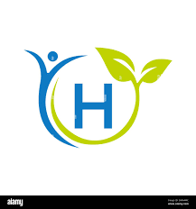
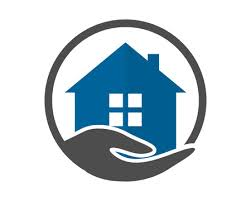

Our Campaigns

Health
Health is crucial because it affects every aspect of life, influencing productivity, happiness, and longevity. It enables individuals to pursue their goals and contribute meaningfully to society.

Education
Education is the process of acquiring knowledge, skills, values, beliefs, and habits. It empowers individuals to understand the world, make informed decisions, and contribute effectively to their communities and societies.

Shelter
Shelter provides essential protection and security, serving as a basic human need to safeguard individuals and families from environmental elements and risks. It also contributes to stability, well-being, and a sense of belonging in communities.